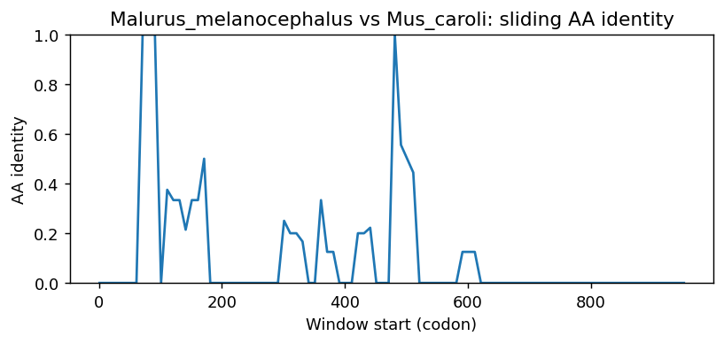

Ortholog Divergence Report
Input: UTS2B.valid.longest.fa · N sequences: 338 · Aligned length: 952 codons
Reference: Malurus_melanocephalus
Quick risk overview
- LOW: 0
- INTERMEDIATE: 0
- HIGH: 56953


Composition & complexity per sequence
Saved as per_sequence_composition.csv. High low-complexity or repeat content can reduce BLAST sensitivity due to soft masking.
| id | GC | GC skew | CpG dens. | AA LCR frac | NT repeat frac | AA len | CDS len |
|---|---|---|---|---|---|---|---|
| Malurus_melanocephalus | 0.50394 | 0.07292 | 0.02632 | 0.14961 | 0.76115 | 127 | 381 |
| Camelus_bactrianus | 0.36695 | -0.08397 | 0.01124 | 0.13445 | 0.67507 | 119 | 357 |
| Bos_taurus | 0.39776 | 0.08451 | 0.01404 | 0.35294 | 0.68347 | 119 | 357 |
| Pseudopodoces_humilis | 0.50122 | 0.1068 | 0.02195 | 0.11679 | 0.77129 | 137 | 411 |
| Peromyscus_maniculatus_bairdii | 0.47619 | -0.10588 | 0.01685 | 0.0 | 0.73109 | 119 | 357 |
| Zonotrichia_leucophrys_gambelii | 0.50394 | 0.09375 | 0.02368 | 0.27559 | 0.73753 | 127 | 381 |
| Prionailurus_bengalensis | 0.39496 | -0.04965 | 0.01685 | 0.22689 | 0.64146 | 119 | 357 |
| Crocodylus_porosus | 0.56944 | 0.05366 | 0.04178 | 0.0 | 0.78056 | 120 | 360 |
| Tinamus_guttatus | 0.50852 | 0.12919 | 0.02439 | 0.21898 | 0.78589 | 137 | 411 |
| Grammomys_surdaster | 0.44068 | 0.01282 | 0.01133 | 0.25424 | 0.67514 | 118 | 354 |
| Meriones_unguiculatus | 0.48459 | -0.07514 | 0.01124 | 0.23529 | 0.64986 | 119 | 357 |
| Suricata_suricatta | 0.40056 | -0.03497 | 0.01404 | 0.12605 | 0.63866 | 119 | 357 |
| Canis_lupus_familiaris | 0.3573 | 0.07317 | 0.00873 | 0.17647 | 0.61438 | 153 | 459 |
| Opisthocomus_hoazin | 0.49081 | 0.09091 | 0.02632 | 0.11024 | 0.8399 | 127 | 381 |
| Oxyura_jamaicensis | 0.49606 | 0.10053 | 0.02632 | 0.23622 | 0.76115 | 127 | 381 |
| Mustela_putorius_furo | 0.39216 | -0.04286 | 0.00562 | 0.22689 | 0.64986 | 119 | 357 |
| Arvicanthis_niloticus | 0.44633 | 0.02532 | 0.01416 | 0.10169 | 0.67232 | 118 | 354 |
| Mirounga_leonina | 0.36691 | 0.01961 | 0.00962 | 0.0 | 0.72182 | 139 | 417 |
| Lagopus_muta | 0.48039 | 0.10204 | 0.01966 | 0.0 | 0.73775 | 136 | 408 |
| Athene_cunicularia | 0.49686 | 0.04641 | 0.02311 | 0.16352 | 0.77568 | 159 | 477 |
| Halichoerus_grypus | 0.37356 | 0.01538 | 0.00865 | 0.0 | 0.68678 | 116 | 348 |
| Oryctolagus_cuniculus | 0.37815 | 0.00741 | 0.00843 | 0.16807 | 0.68347 | 119 | 357 |
| Physeter_macrocephalus | 0.38983 | 0.02899 | 0.01133 | 0.13559 | 0.75424 | 118 | 354 |
| Pseudophryne_corroboree | 0.41737 | -0.02013 | 0.00843 | 0.29412 | 0.70308 | 119 | 357 |
| Pelobates_fuscus | 0.39548 | 0.0 | 0.01133 | 0.22034 | 0.75141 | 118 | 354 |
| Mesoplodon_densirostris | 0.38983 | 0.02899 | 0.01133 | 0.10169 | 0.78814 | 118 | 354 |
| Puma_concolor | 0.39659 | -0.05521 | 0.0122 | 0.27007 | 0.69343 | 137 | 411 |
| Falco_biarmicus | 0.48819 | 0.10753 | 0.02368 | 0.23622 | 0.77428 | 127 | 381 |
| Leptosomus_discolor | 0.47769 | 0.10989 | 0.02105 | 0.23622 | 0.77165 | 127 | 381 |
| Pezoporus_flaviventris | 0.46982 | 0.11732 | 0.02368 | 0.29134 | 0.7664 | 127 | 381 |
| Bos_mutus | 0.40056 | 0.07692 | 0.01404 | 0.2437 | 0.67227 | 119 | 357 |
| Strigops_habroptila | 0.46194 | 0.11364 | 0.01842 | 0.28346 | 0.7664 | 127 | 381 |
| Calypte_anna | 0.47244 | 0.1 | 0.02105 | 0.26772 | 0.77953 | 127 | 381 |
| Falco_cherrug | 0.48556 | 0.1027 | 0.02368 | 0.23622 | 0.77428 | 127 | 381 |
| Cuculus_canorus | 0.47244 | 0.11111 | 0.01579 | 0.23622 | 0.8084 | 127 | 381 |
| Pezoporus_wallicus | 0.46982 | 0.11732 | 0.02368 | 0.29134 | 0.7664 | 127 | 381 |
| Rhinopithecus_bieti | 0.36607 | -0.10569 | 0.00299 | 0.0 | 0.63393 | 112 | 336 |
| Apteryx_rowi | 0.47932 | 0.1269 | 0.01951 | 0.22628 | 0.79075 | 137 | 411 |
| Trachypithecus_francoisi | 0.37195 | -0.01639 | 0.01629 | 0.09756 | 0.68902 | 164 | 492 |
| Pterocles_gutturalis | 0.51444 | 0.10204 | 0.03158 | 0.23622 | 0.77165 | 127 | 381 |
| Xenopus_tropicalis | 0.43697 | -0.05128 | 0.01404 | 0.23529 | 0.70588 | 119 | 357 |
| Aptenodytes_forsteri | 0.49344 | 0.08511 | 0.02105 | 0.23622 | 0.79265 | 127 | 381 |
| Nannospalax_galili | 0.40395 | 0.00699 | 0.01416 | 0.0 | 0.67797 | 118 | 354 |
| Zonotrichia_albicollis | 0.5 | 0.10417 | 0.01828 | 0.25781 | 0.74219 | 128 | 384 |
| Bubalus_kerabau | 0.39776 | 0.09859 | 0.01404 | 0.12605 | 0.70308 | 119 | 357 |
| Mirounga_angustirostris | 0.38647 | 0.05 | 0.00726 | 0.0 | 0.71256 | 138 | 414 |
| Corapipo_altera | 0.48031 | 0.0929 | 0.01842 | 0.12598 | 0.7979 | 127 | 381 |
| Corvus_brachyrhynchos | 0.50122 | 0.08738 | 0.02195 | 0.13869 | 0.75182 | 137 | 411 |
| Rana_temporaria | 0.41722 | -0.03704 | 0.00664 | 0.23179 | 0.72627 | 151 | 453 |
| Meleagris_gallopavo | 0.47794 | 0.07692 | 0.02211 | 0.0 | 0.75735 | 136 | 408 |
| Terrapene_triunguis | 0.54451 | -0.04183 | 0.0332 | 0.36025 | 0.64389 | 161 | 483 |
| Spea_bombifrons | 0.41176 | 0.02041 | 0.00843 | 0.21008 | 0.66667 | 119 | 357 |
| Phodopus_roborovskii | 0.45902 | -0.08333 | 0.0137 | 0.0 | 0.71585 | 122 | 366 |
| Panthera_onca | 0.39066 | 0.04348 | 0.01277 | 0.17197 | 0.69427 | 157 | 471 |
| Alligator_sinensis | 0.56667 | 0.04902 | 0.039 | 0.0 | 0.69722 | 120 | 360 |
| Aquila_chrysaetos_chrysaetos | 0.48819 | 0.11828 | 0.02368 | 0.23622 | 0.78215 | 127 | 381 |
| Cyrtonyx_montezumae | 0.49265 | 0.09453 | 0.02703 | 0.0 | 0.76225 | 136 | 408 |
| Tympanuchus_pallidicinctus | 0.47794 | 0.08718 | 0.0172 | 0.0 | 0.74755 | 136 | 408 |
| Nyctereutes_procyonoides | 0.37535 | 0.0 | 0.00843 | 0.22689 | 0.61064 | 119 | 357 |
| Odocoileus_virginianus | 0.38936 | 0.07914 | 0.01404 | 0.10924 | 0.68908 | 119 | 357 |
| Mus_pahari | 0.43658 | 0.01351 | 0.00888 | 0.11504 | 0.69617 | 113 | 339 |
| Aythya_fuligula | 0.49487 | 0.09845 | 0.02571 | 0.23077 | 0.81538 | 130 | 390 |
| Capra_hircus | 0.40305 | -0.03784 | 0.01965 | 0.0 | 0.69499 | 153 | 459 |
| Cynocephalus_volans | 0.38136 | 0.02222 | 0.00567 | 0.0 | 0.70056 | 118 | 354 |
| Chiroxiphia_lanceolata | 0.47507 | 0.09392 | 0.01579 | 0.12598 | 0.7979 | 127 | 381 |
| Rhinolophus_ferrumequinum | 0.36975 | 0.0 | 0.00843 | 0.0 | 0.73389 | 119 | 357 |
| Bison_bison_bison | 0.39776 | 0.08451 | 0.01404 | 0.35294 | 0.68908 | 119 | 357 |
| Oenanthe_melanoleuca | 0.50394 | 0.08333 | 0.02368 | 0.25984 | 0.78478 | 127 | 381 |
| Papio_anubis | 0.39833 | -0.09623 | 0.00668 | 0.0 | 0.72 | 200 | 600 |
| Chrysochloris_asiatica | 0.39776 | -0.04225 | 0.00843 | 0.0 | 0.76751 | 119 | 357 |
| Zalophus_californianus | 0.38701 | 0.0219 | 0.01416 | 0.12712 | 0.69492 | 118 | 354 |
| Malaclemys_terrapin_pileata | 0.52222 | 0.02128 | 0.039 | 0.36667 | 0.67778 | 120 | 360 |
| Homo_sapiens | 0.39899 | -0.10127 | 0.01519 | 0.25 | 0.66414 | 132 | 396 |
| Jaculus_jaculus | 0.38136 | 0.03704 | 0.01133 | 0.11864 | 0.64407 | 118 | 354 |
| Manacus_candei | 0.48031 | 0.11475 | 0.01579 | 0.12598 | 0.7979 | 127 | 381 |
| Falco_rusticolus | 0.48556 | 0.1027 | 0.02368 | 0.23622 | 0.77428 | 127 | 381 |
| Callorhinus_ursinus | 0.38701 | 0.0219 | 0.01416 | 0.12712 | 0.68927 | 118 | 354 |
| Panthera_uncia | 0.39066 | 0.04348 | 0.01277 | 0.17197 | 0.69427 | 157 | 471 |
| Motacilla_alba_alba | 0.49869 | 0.13684 | 0.02632 | 0.27559 | 0.72703 | 127 | 381 |
| Molothrus_ater | 0.5026 | 0.10881 | 0.02089 | 0.25781 | 0.7474 | 128 | 384 |
| Ovis_aries | 0.39216 | 0.02857 | 0.01685 | 0.0 | 0.70028 | 119 | 357 |
| Myiozetetes_cayanensis | 0.47507 | 0.10497 | 0.01316 | 0.12598 | 0.8084 | 127 | 381 |
| Dipodomys_ordii | 0.41092 | 0.02098 | 0.01153 | 0.0 | 0.73276 | 116 | 348 |
| Lepidothrix_coronata | 0.48031 | 0.11475 | 0.01579 | 0.12598 | 0.7979 | 127 | 381 |
| Ictidomys_tridecemlineatus | 0.375 | -0.02222 | 0.00557 | 0.0 | 0.69722 | 120 | 360 |
| Sturnus_vulgaris | 0.48662 | 0.09 | 0.01951 | 0.13869 | 0.81022 | 137 | 411 |
| Eleutherodactylus_coqui | 0.42297 | -0.04636 | 0.01124 | 0.20168 | 0.7479 | 119 | 357 |
| Geospiza_fortis | 0.50131 | 0.10995 | 0.02105 | 0.27559 | 0.73228 | 127 | 381 |
| Nothoprocta_perdicaria | 0.50656 | 0.11917 | 0.02895 | 0.23622 | 0.80052 | 127 | 381 |
| Loxodonta_africana | 0.40909 | 0.02222 | 0.01824 | 0.13636 | 0.81212 | 110 | 330 |
| Passer_montanus | 0.49344 | 0.10638 | 0.01316 | 0.27559 | 0.72178 | 127 | 381 |
| Tyto_alba | 0.48031 | 0.07104 | 0.02105 | 0.23622 | 0.7979 | 127 | 381 |
| Cygnus_atratus | 0.49148 | 0.09901 | 0.02439 | 0.21898 | 0.77372 | 137 | 411 |
| Corvus_hawaiiensis | 0.50394 | 0.08333 | 0.02105 | 0.14961 | 0.76903 | 127 | 381 |
| Eumetopias_jubatus | 0.38418 | 0.0 | 0.01416 | 0.12712 | 0.67232 | 118 | 354 |
| Arvicola_amphibius | 0.48087 | -0.11364 | 0.02192 | 0.09836 | 0.65847 | 122 | 366 |
| Vidua_chalybeata | 0.50131 | 0.10995 | 0.01842 | 0.27559 | 0.73753 | 127 | 381 |
| Falco_peregrinus | 0.48556 | 0.1027 | 0.02368 | 0.23622 | 0.77428 | 127 | 381 |
| Bubalus_bubalis | 0.39776 | 0.09859 | 0.01404 | 0.12605 | 0.70308 | 119 | 357 |
| Chamaea_fasciata | 0.49869 | 0.10526 | 0.01579 | 0.13386 | 0.77953 | 127 | 381 |
| Egretta_garzetta | 0.49081 | 0.05882 | 0.02368 | 0.23622 | 0.86089 | 127 | 381 |
| Onychostruthus_taczanowskii | 0.49869 | 0.10526 | 0.01842 | 0.27559 | 0.73228 | 127 | 381 |
| Leopardus_geoffroyi | 0.38655 | -0.04348 | 0.00843 | 0.22689 | 0.64706 | 119 | 357 |
| Rhinopithecus_roxellana | 0.35163 | -0.00578 | 0.00815 | 0.17683 | 0.68496 | 164 | 492 |
| Lepus_europaeus | 0.37255 | 0.03759 | 0.00843 | 0.2437 | 0.67787 | 119 | 357 |
| Delphinus_delphis | 0.38983 | 0.01449 | 0.01133 | 0.23729 | 0.76554 | 118 | 354 |
| Chrysemys_picta_bellii | 0.51944 | 0.00535 | 0.03621 | 0.36667 | 0.68333 | 120 | 360 |
| Lagenorhynchus_albirostris | 0.39548 | 0.0 | 0.01133 | 0.22881 | 0.76554 | 118 | 354 |
| Orcinus_orca | 0.39266 | 0.02158 | 0.01133 | 0.10169 | 0.77684 | 118 | 354 |
| Eschrichtius_robustus | 0.38701 | 0.0219 | 0.0085 | 0.11017 | 0.70904 | 118 | 354 |
| Gymnogyps_californianus | 0.47689 | 0.11224 | 0.01951 | 0.21898 | 0.79805 | 137 | 411 |
| Phocoena_phocoena | 0.38418 | 0.01471 | 0.01416 | 0.21186 | 0.77684 | 118 | 354 |
| Molothrus_aeneus | 0.50394 | 0.11458 | 0.02368 | 0.27559 | 0.74278 | 127 | 381 |
| Cavia_porcellus | 0.39886 | 0.05714 | 0.02 | 0.0 | 0.65527 | 117 | 351 |
| Equus_asinus | 0.39216 | -0.02857 | 0.01124 | 0.12605 | 0.79832 | 119 | 357 |
| Columba_livia | 0.475 | 0.02456 | 0.01336 | 0.15 | 0.76 | 200 | 600 |
| Gallus_gallus | 0.49265 | 0.07463 | 0.02211 | 0.0 | 0.70833 | 136 | 408 |
| Apodemus_sylvaticus | 0.44248 | 0.0 | 0.00296 | 0.0 | 0.60177 | 113 | 339 |
| Propithecus_coquereli | 0.40056 | -0.04895 | 0.01404 | 0.10924 | 0.67227 | 119 | 357 |
| Microtus_oregoni | 0.47814 | -0.10857 | 0.01918 | 0.09836 | 0.5929 | 122 | 366 |
| Cervus_canadensis | 0.39216 | 0.08571 | 0.01685 | 0.10924 | 0.70028 | 119 | 357 |
| Leptonychotes_weddellii | 0.37356 | 0.03077 | 0.00865 | 0.0 | 0.70977 | 116 | 348 |
| Marmota_marmota_marmota | 0.38611 | -0.07914 | 0.00557 | 0.0 | 0.68889 | 120 | 360 |
| Macaca_thibetana_thibetana | 0.40667 | -0.09836 | 0.01336 | 0.0 | 0.73 | 200 | 600 |
| Cercocebus_atys | 0.3937 | -0.04 | 0.01316 | 0.0 | 0.67454 | 127 | 381 |
| Coturnix_japonica | 0.47549 | 0.1134 | 0.0172 | 0.0 | 0.75245 | 136 | 408 |
| Hylobates_moloch | 0.38655 | -0.01449 | 0.01685 | 0.16807 | 0.66387 | 119 | 357 |
| Phocoena_sinus | 0.38418 | 0.01471 | 0.01416 | 0.21186 | 0.77684 | 118 | 354 |
| Bufo_bufo | 0.43716 | -0.1 | 0.01096 | 0.29508 | 0.69945 | 122 | 366 |
| Melopsittacus_undulatus | 0.46719 | 0.1236 | 0.02632 | 0.29134 | 0.77165 | 127 | 381 |
| Eulemur_rufifrons | 0.39496 | -0.03546 | 0.00562 | 0.11765 | 0.67787 | 119 | 357 |
| Protopterus_annectens | 0.38983 | 0.08696 | 0.00567 | 0.0 | 0.59322 | 118 | 354 |
| Marmota_monax | 0.38567 | 0.0 | 0.00829 | 0.0 | 0.66391 | 121 | 363 |
| Ranitomeya_imitator | 0.40896 | -0.06849 | 0.00562 | 0.23529 | 0.69468 | 119 | 357 |
| Pleurodeles_waltl | 0.5014 | -0.03911 | 0.02528 | 0.37815 | 0.68627 | 119 | 357 |
| Emydura_macquarii_macquarii | 0.53333 | 0.0625 | 0.05014 | 0.3 | 0.71944 | 120 | 360 |
| Apaloderma_vittatum | 0.45932 | 0.04 | 0.01842 | 0.12598 | 0.8189 | 127 | 381 |
| Rattus_norvegicus | 0.48588 | -0.01163 | 0.02833 | 0.11017 | 0.59322 | 118 | 354 |
| Peromyscus_leucopus | 0.46448 | -0.08235 | 0.0137 | 0.0 | 0.75956 | 122 | 366 |
| Dromaius_novaehollandiae | 0.47202 | 0.13402 | 0.01463 | 0.21898 | 0.81509 | 137 | 411 |
| Chroicocephalus_ridibundus | 0.48819 | 0.09677 | 0.02632 | 0.23622 | 0.76378 | 127 | 381 |
| Neofelis_nebulosa | 0.39496 | -0.03546 | 0.01685 | 0.22689 | 0.63585 | 119 | 357 |
| Kogia_breviceps | 0.38701 | 0.0365 | 0.01133 | 0.13559 | 0.75424 | 118 | 354 |
| Rattus_rattus | 0.49153 | -0.02299 | 0.02833 | 0.11017 | 0.62712 | 118 | 354 |
| Melospiza_melodia_melodia | 0.51181 | 0.09744 | 0.02895 | 0.27559 | 0.77428 | 127 | 381 |
| Patagioenas_fasciata | 0.48175 | 0.10101 | 0.01707 | 0.21898 | 0.77616 | 137 | 411 |
| Carlito_syrichta | 0.34454 | 0.05691 | 0.00562 | 0.0 | 0.69748 | 119 | 357 |
| Accipiter_gentilis | 0.48031 | 0.11475 | 0.01842 | 0.23622 | 0.78215 | 127 | 381 |
| Apteryx_mantelli | 0.47769 | 0.12088 | 0.01842 | 0.24409 | 0.77953 | 127 | 381 |
| Ficedula_albicollis | 0.50919 | 0.08247 | 0.02632 | 0.14961 | 0.77953 | 127 | 381 |
| Vulpes_vulpes | 0.37255 | 0.00752 | 0.00562 | 0.22689 | 0.63305 | 119 | 357 |
| Canis_lupus_dingo | 0.40294 | -0.01703 | 0.00883 | 0.04412 | 0.65049 | 680 | 2040 |
| Symphalangus_syndactylus | 0.39279 | -0.00917 | 0.01264 | 0.27568 | 0.66486 | 185 | 555 |
| Puma_yagouaroundi | 0.39776 | -0.04225 | 0.01685 | 0.22689 | 0.64146 | 119 | 357 |
| Oryx_dammah | 0.39216 | 0.05714 | 0.01685 | 0.0 | 0.69468 | 119 | 357 |
| Pelecanus_crispus | 0.49606 | 0.10053 | 0.01842 | 0.27559 | 0.75066 | 127 | 381 |
| Dryobates_pubescens | 0.51969 | 0.0404 | 0.02105 | 0.33071 | 0.74803 | 127 | 381 |
| Piliocolobus_tephrosceles | 0.35772 | 0.03409 | 0.00815 | 0.17073 | 0.69512 | 164 | 492 |
| Mandrillus_leucophaeus | 0.38418 | -0.07353 | 0.01133 | 0.13559 | 0.69774 | 118 | 354 |
| Microtus_ochrogaster | 0.48406 | -0.13772 | 0.02326 | 0.0 | 0.69275 | 115 | 345 |
| Panthera_tigris | 0.39066 | 0.05435 | 0.01064 | 0.17197 | 0.68577 | 157 | 471 |
| Phaenicophaeus_curvirostris | 0.48031 | 0.0929 | 0.02368 | 0.23622 | 0.8084 | 127 | 381 |
| Nipponia_nippon | 0.48556 | 0.11351 | 0.01579 | 0.23622 | 0.7979 | 127 | 381 |
| Peromyscus_eremicus | 0.47814 | -0.12 | 0.01644 | 0.0 | 0.79781 | 122 | 366 |
| Prionailurus_viverrinus | 0.4031 | 0.0 | 0.01554 | 0.30233 | 0.67442 | 129 | 387 |
| Bos_indicus | 0.39776 | 0.08451 | 0.01404 | 0.35294 | 0.68347 | 119 | 357 |
| Rhea_pennata | 0.46959 | 0.10881 | 0.00976 | 0.22628 | 0.78589 | 137 | 411 |
| Neophocaena_asiaeorientalis_asiaeorientalis | 0.38136 | 0.00741 | 0.01133 | 0.21186 | 0.77119 | 118 | 354 |
| Mauremys_mutica | 0.52344 | 0.02488 | 0.03655 | 0.34375 | 0.72135 | 128 | 384 |
| Macaca_nemestrina | 0.68391 | 0.02521 | 0.08777 | 0.38362 | 0.59195 | 232 | 696 |
| Chaetura_pelagica | 0.49344 | 0.11702 | 0.02105 | 0.23622 | 0.79265 | 127 | 381 |
| Tursiops_truncatus | 0.38983 | 0.0 | 0.0085 | 0.23729 | 0.76554 | 118 | 354 |
| Odobenus_rosmarus_divergens | 0.38701 | 0.05109 | 0.01416 | 0.12712 | 0.68927 | 118 | 354 |
| Cygnus_olor | 0.49081 | 0.08021 | 0.02632 | 0.23622 | 0.76115 | 127 | 381 |
| Castor_canadensis | 0.41595 | -0.0137 | 0.01429 | 0.26496 | 0.7208 | 117 | 351 |
| Marmota_flaviventris | 0.39601 | -0.02158 | 0.00857 | 0.0 | 0.7151 | 117 | 351 |
| Hippopotamus_amphibius_kiboko | 0.40113 | -0.01408 | 0.017 | 0.12712 | 0.68079 | 118 | 354 |
| Gavialis_gangeticus | 0.56389 | 0.05419 | 0.039 | 0.0 | 0.76944 | 120 | 360 |
| Gavia_stellata | 0.49606 | 0.11111 | 0.02105 | 0.23622 | 0.7979 | 127 | 381 |
| Pseudopipra_pipra | 0.48031 | 0.10383 | 0.01579 | 0.12598 | 0.7979 | 127 | 381 |
| Chlorocebus_sabaeus | 0.37615 | -0.08943 | 0.0092 | 0.13761 | 0.67584 | 109 | 327 |
| Pygoscelis_adeliae | 0.49606 | 0.10053 | 0.02105 | 0.23622 | 0.7979 | 127 | 381 |
| Rissa_tridactyla | 0.48662 | 0.1 | 0.02439 | 0.21898 | 0.78102 | 137 | 411 |
| Pseudorca_crassidens | 0.39548 | 0.01429 | 0.01133 | 0.23729 | 0.78249 | 118 | 354 |
| Haliaeetus_albicilla | 0.48556 | 0.13514 | 0.02105 | 0.23622 | 0.78215 | 127 | 381 |
| Cinclus_cinclus | 0.48175 | 0.10101 | 0.01707 | 0.13869 | 0.79075 | 137 | 411 |
| Lathamus_discolor | 0.48785 | -0.04626 | 0.02087 | 0.26562 | 0.77951 | 192 | 576 |
| Anser_cygnoides | 0.49344 | 0.08511 | 0.02895 | 0.23622 | 0.76115 | 127 | 381 |
| Prinia_subflava | 0.51181 | 0.10769 | 0.02368 | 0.14961 | 0.79003 | 127 | 381 |
| Lynx_rufus | 0.4031 | 0.0 | 0.01295 | 0.28682 | 0.66925 | 129 | 387 |
| Vidua_macroura | 0.49606 | 0.11111 | 0.01579 | 0.27559 | 0.74278 | 127 | 381 |
| Melanerpes_formicivorus | 0.54856 | 0.03349 | 0.02632 | 0.31496 | 0.73753 | 127 | 381 |
| Melospiza_georgiana | 0.51181 | 0.09744 | 0.02895 | 0.27559 | 0.77428 | 127 | 381 |
| Theropithecus_gelada | 0.38418 | -0.05882 | 0.01133 | 0.13559 | 0.69774 | 118 | 354 |
| Budorcas_taxicolor | 0.39416 | 0.0 | 0.02195 | 0.09489 | 0.6764 | 137 | 411 |
| Harpia_harpyja | 0.48556 | 0.11351 | 0.02105 | 0.23622 | 0.78215 | 127 | 381 |
| Bos_javanicus | 0.39776 | 0.08451 | 0.01404 | 0.35294 | 0.68347 | 119 | 357 |
| Corvus_moneduloides | 0.50122 | 0.08738 | 0.01951 | 0.13869 | 0.75182 | 137 | 411 |
| Lemur_catta | 0.39776 | -0.02817 | 0.01124 | 0.0 | 0.70028 | 119 | 357 |
| Emys_orbicularis | 0.51111 | 0.0 | 0.03064 | 0.36667 | 0.67778 | 120 | 360 |
| Mauremys_reevesii | 0.50513 | 0.03553 | 0.03085 | 0.33846 | 0.71026 | 130 | 390 |
| Balaenoptera_acutorostrata | 0.37853 | 0.02985 | 0.0085 | 0.13559 | 0.70904 | 118 | 354 |
| Lonchura_striata | 0.49869 | 0.12632 | 0.02105 | 0.27559 | 0.74278 | 127 | 381 |
| Struthio_camelus | 0.46154 | 0.12222 | 0.01028 | 0.23077 | 0.8359 | 130 | 390 |
| Ursus_americanus | 0.39496 | -0.00709 | 0.01966 | 0.12605 | 0.69748 | 119 | 357 |
| Myodes_glareolus | 0.46948 | -0.06 | 0.02353 | 0.0 | 0.60798 | 142 | 426 |
| Neopelma_chrysocephalum | 0.48294 | 0.11957 | 0.01579 | 0.12598 | 0.8084 | 127 | 381 |
| Eubalaena_glacialis | 0.38701 | 0.0219 | 0.01133 | 0.13559 | 0.70904 | 118 | 354 |
| Moschus_berezovskii | 0.39548 | 0.05714 | 0.017 | 0.13559 | 0.68362 | 118 | 354 |
| Mustela_lutreola | 0.38655 | -0.01449 | 0.00281 | 0.22689 | 0.64986 | 119 | 357 |
| Passer_domesticus | 0.49606 | 0.11111 | 0.01579 | 0.27559 | 0.72178 | 127 | 381 |
| Balaenoptera_ricei | 0.38136 | 0.02222 | 0.01133 | 0.13559 | 0.70904 | 118 | 354 |
| Dipodomys_spectabilis | 0.4106 | 0.05376 | 0.00885 | 0.0 | 0.69978 | 151 | 453 |
| Haliaeetus_leucocephalus | 0.48294 | 0.13043 | 0.01842 | 0.23622 | 0.78215 | 127 | 381 |
| Caloenas_nicobarica | 0.48662 | 0.08 | 0.02195 | 0.25547 | 0.79562 | 137 | 411 |
| Antrostomus_carolinensis | 0.48819 | 0.08602 | 0.01579 | 0.23622 | 0.75066 | 127 | 381 |
| Empidonax_traillii | 0.48031 | 0.0929 | 0.01579 | 0.12598 | 0.8084 | 127 | 381 |
| Lipotes_vexillifer | 0.38418 | 0.01471 | 0.0085 | 0.23729 | 0.76554 | 118 | 354 |
| Chlamydotis_macqueenii | 0.48294 | 0.11957 | 0.02105 | 0.23622 | 0.8189 | 127 | 381 |
| Heterocephalus_glaber | 0.39091 | -0.06977 | 0.01216 | 0.16364 | 0.61818 | 110 | 330 |
| Camelus_ferus | 0.36695 | -0.08397 | 0.01124 | 0.13445 | 0.67507 | 119 | 357 |
| Hyla_sarda | 0.40896 | 0.0 | 0.00562 | 0.20168 | 0.73669 | 119 | 357 |
| Equus_quagga | 0.39496 | -0.02128 | 0.01124 | 0.12605 | 0.79832 | 119 | 357 |
| Gopherus_flavomarginatus | 0.50278 | 0.07182 | 0.02507 | 0.23333 | 0.67222 | 120 | 360 |
| Pogoniulus_pusillus | 0.49878 | 0.10244 | 0.01463 | 0.24088 | 0.75182 | 137 | 411 |
| Charadrius_vociferus | 0.48056 | 0.09827 | 0.01671 | 0.25 | 0.83333 | 120 | 360 |
| Nomascus_leucogenys | 0.37535 | -0.04478 | 0.01124 | 0.16807 | 0.64986 | 119 | 357 |
| Numida_meleagris | 0.49265 | 0.08458 | 0.02457 | 0.0 | 0.72794 | 136 | 408 |
| Pyrgilauda_ruficollis | 0.50131 | 0.10995 | 0.01842 | 0.27559 | 0.73228 | 127 | 381 |
| Falco_naumanni | 0.48819 | 0.10753 | 0.02632 | 0.23622 | 0.77428 | 127 | 381 |
| Colobus_angolensis_palliatus | 0.39266 | -0.05036 | 0.01133 | 0.13559 | 0.69209 | 118 | 354 |
| Bufo_gargarizans | 0.43443 | -0.08176 | 0.00822 | 0.29508 | 0.68306 | 122 | 366 |
| Parus_major | 0.50394 | 0.11458 | 0.02105 | 0.12598 | 0.75853 | 127 | 381 |
| Lontra_canadensis | 0.39444 | 0.04225 | 0.01114 | 0.1 | 0.60556 | 120 | 360 |
| Panthera_pardus | 0.39776 | -0.02817 | 0.01685 | 0.22689 | 0.63585 | 119 | 357 |
| Manacus_vitellinus | 0.48031 | 0.11475 | 0.01579 | 0.12598 | 0.7979 | 127 | 381 |
| Phasianus_colchicus | 0.48039 | 0.09184 | 0.01966 | 0.0 | 0.74755 | 136 | 408 |
| Serinus_canaria | 0.49869 | 0.10526 | 0.01842 | 0.27559 | 0.74278 | 127 | 381 |
| Ammospiza_nelsoni | 0.50919 | 0.1134 | 0.02368 | 0.27559 | 0.75853 | 127 | 381 |
| Pongo_pygmaeus | 0.39368 | 0.14599 | 0.01151 | 0.15517 | 0.63793 | 232 | 696 |
| Microcebus_murinus | 0.39216 | 0.0 | 0.01124 | 0.0 | 0.64986 | 119 | 357 |
| Poecile_atricapillus | 0.50852 | 0.11005 | 0.02195 | 0.11679 | 0.77129 | 137 | 411 |
| Neogale_vison | 0.38655 | 0.01449 | 0.00281 | 0.22689 | 0.66106 | 119 | 357 |
| Lutra_lutra | 0.39339 | -0.0229 | 0.01205 | 0.10811 | 0.60661 | 111 | 333 |
| Sylvia_atricapilla | 0.49878 | 0.1122 | 0.01951 | 0.12409 | 0.76642 | 137 | 411 |
| Dermochelys_coriacea | 0.50556 | 0.04396 | 0.02507 | 0.325 | 0.62778 | 120 | 360 |
| Diceros_bicornis_minor | 0.40336 | 0.0 | 0.00843 | 0.13445 | 0.80112 | 119 | 357 |
| Otolemur_garnettii | 0.43697 | 0.02564 | 0.01685 | 0.10924 | 0.69188 | 119 | 357 |
| Mus_caroli | 0.44444 | -0.03125 | 0.01045 | 0.13542 | 0.63542 | 96 | 288 |
| Pezoporus_occidentalis | 0.46194 | 0.10227 | 0.01842 | 0.29134 | 0.74541 | 127 | 381 |
| Chionomys_nivalis | 0.46719 | -0.14607 | 0.01579 | 0.0 | 0.66142 | 127 | 381 |
| Catharus_ustulatus | 0.49606 | 0.08995 | 0.02368 | 0.14961 | 0.76378 | 127 | 381 |
| Eurypyga_helias | 0.50394 | 0.10417 | 0.02895 | 0.23622 | 0.7874 | 127 | 381 |
| Peromyscus_californicus_insignis | 0.46448 | -0.11765 | 0.0137 | 0.0 | 0.72131 | 122 | 366 |
| Caretta_caretta | 0.52222 | 0.05319 | 0.02507 | 0.25 | 0.65 | 120 | 360 |
| Alligator_mississippiensis | 0.55309 | 0.0625 | 0.03465 | 0.0 | 0.7037 | 135 | 405 |
| Globicephala_melas | 0.39266 | 0.00719 | 0.01133 | 0.23729 | 0.77684 | 118 | 354 |
| Nanorana_parkeri | 0.40556 | -0.0274 | 0.00557 | 0.2 | 0.73611 | 120 | 360 |
| Delphinapterus_leucas | 0.38983 | 0.04348 | 0.01416 | 0.23729 | 0.77684 | 118 | 354 |
| Cervus_elaphus | 0.39216 | 0.08571 | 0.01685 | 0.10924 | 0.70028 | 119 | 357 |
| Gopherus_evgoodei | 0.50556 | 0.06593 | 0.02786 | 0.34167 | 0.67222 | 120 | 360 |
| Psammomys_obesus | 0.46779 | -0.02994 | 0.02247 | 0.0 | 0.65546 | 119 | 357 |
| Ailuropoda_melanoleuca | 0.40056 | -0.00699 | 0.01124 | 0.11765 | 0.66947 | 119 | 357 |
| Acanthisitta_chloris | 0.47445 | 0.13846 | 0.01707 | 0.11679 | 0.78832 | 137 | 411 |
| Hyperolius_riggenbachi | 0.42938 | -0.03947 | 0.01416 | 0.29661 | 0.75424 | 118 | 354 |
| Vulpes_lagopus | 0.37535 | 0.0 | 0.00843 | 0.22689 | 0.63866 | 119 | 357 |
| Bombina_bombina | 0.37815 | 0.00741 | 0.00562 | 0.17647 | 0.67787 | 119 | 357 |
| Ambystoma_mexicanum | 0.51594 | 0.02247 | 0.02907 | 0.24348 | 0.72464 | 115 | 345 |
| Agelaius_phoeniceus | 0.50656 | 0.11917 | 0.02632 | 0.27559 | 0.72703 | 127 | 381 |
| Chelonia_mydas | 0.53056 | 0.05759 | 0.03343 | 0.25 | 0.65 | 120 | 360 |
| Chinchilla_lanigera | 0.37322 | -0.0229 | 0.00857 | 0.11111 | 0.63533 | 117 | 351 |
| Elephas_maximus_indicus | 0.41212 | 0.0 | 0.01824 | 0.13636 | 0.79394 | 110 | 330 |
| Equus_caballus | 0.39216 | -0.02857 | 0.01124 | 0.12605 | 0.79832 | 119 | 357 |
| Cyanistes_caeruleus | 0.50394 | 0.10417 | 0.02632 | 0.12598 | 0.74278 | 127 | 381 |
| Mesitornis_unicolor | 0.48294 | 0.1413 | 0.01579 | 0.11024 | 0.7769 | 127 | 381 |
| Merops_nubicus | 0.48031 | 0.1694 | 0.01842 | 0.11024 | 0.77165 | 127 | 381 |
| Pipra_filicauda | 0.48031 | 0.11475 | 0.01579 | 0.12598 | 0.7979 | 127 | 381 |
| Balearica_regulorum_gibbericeps | 0.48031 | 0.11475 | 0.02105 | 0.24409 | 0.7979 | 127 | 381 |
| Centrocercus_urophasianus | 0.47354 | 0.02793 | 0.01857 | 0.0 | 0.76984 | 126 | 378 |
| Sus_scrofa | 0.38936 | 0.02158 | 0.01685 | 0.0 | 0.68067 | 119 | 357 |
| Equus_przewalskii | 0.38936 | -0.03597 | 0.00843 | 0.12605 | 0.79832 | 119 | 357 |
| Pan_troglodytes | 0.40909 | -0.07407 | 0.01519 | 0.15152 | 0.64899 | 132 | 396 |
| Camelus_dromedarius | 0.36695 | -0.08397 | 0.01124 | 0.13445 | 0.67507 | 119 | 357 |
| Grus_americana | 0.48294 | 0.09783 | 0.01842 | 0.24409 | 0.7874 | 127 | 381 |
| Felis_catus | 0.39496 | -0.04965 | 0.01404 | 0.22689 | 0.65266 | 119 | 357 |
| Ursus_arctos | 0.39216 | -0.01429 | 0.01685 | 0.12605 | 0.69188 | 119 | 357 |
| Dipodomys_merriami | 0.40517 | 0.02128 | 0.00865 | 0.0 | 0.72126 | 116 | 348 |
| Hirundo_rustica | 0.51181 | 0.10769 | 0.02895 | 0.14961 | 0.75328 | 127 | 381 |
| Lynx_canadensis | 0.40052 | 0.00645 | 0.01554 | 0.28682 | 0.68217 | 129 | 387 |
| Enhydra_lutris_kenyoni | 0.38025 | -0.01299 | 0.00743 | 0.08889 | 0.65185 | 135 | 405 |
| Indicator_indicator | 0.49081 | 0.08021 | 0.01316 | 0.22835 | 0.71654 | 127 | 381 |
| Mesocricetus_auratus | 0.4463 | -0.07054 | 0.00928 | 0.0 | 0.73333 | 180 | 540 |
| Muntiacus_reevesi | 0.38375 | 0.08029 | 0.01404 | 0.10924 | 0.67227 | 119 | 357 |
| Apus_apus | 0.48294 | 0.1087 | 0.02105 | 0.23622 | 0.7769 | 127 | 381 |
| Balaenoptera_musculus | 0.38418 | 0.02941 | 0.01133 | 0.13559 | 0.70904 | 118 | 354 |
| Corvus_cornix_cornix | 0.49878 | 0.09268 | 0.01951 | 0.13869 | 0.75182 | 137 | 411 |
| Lagopus_leucura | 0.48039 | 0.09184 | 0.01966 | 0.0 | 0.72304 | 136 | 408 |
| Nestor_notabilis | 0.46472 | 0.15183 | 0.01463 | 0.27007 | 0.75426 | 137 | 411 |
| Trachemys_scripta_elegans | 0.51667 | 0.0 | 0.03343 | 0.36667 | 0.67778 | 120 | 360 |
| Neomonachus_schauinslandi | 0.37815 | 0.05185 | 0.00843 | 0.0 | 0.65826 | 119 | 357 |
| Dendropsophus_ebraccatus | 0.43978 | -0.01911 | 0.00843 | 0.31092 | 0.7423 | 119 | 357 |
| Ovis_canadensis | 0.42932 | 0.03252 | 0.01573 | 0.06283 | 0.73124 | 191 | 573 |
| Cariama_cristata | 0.48148 | 0.13187 | 0.02653 | 0.2381 | 0.82011 | 126 | 378 |
| Dama_dama | 0.38375 | 0.06569 | 0.01404 | 0.10924 | 0.69468 | 119 | 357 |
| Melozone_crissalis | 0.50131 | 0.10995 | 0.02368 | 0.27559 | 0.73753 | 127 | 381 |
| Trichechus_manatus_latirostris | 0.41176 | -0.06122 | 0.02247 | 0.20168 | 0.80112 | 119 | 357 |
| Alexandromys_fortis | 0.48087 | -0.13636 | 0.01918 | 0.09836 | 0.61749 | 122 | 366 |
| Anas_acuta | 0.49344 | 0.10638 | 0.02632 | 0.23622 | 0.7664 | 127 | 381 |
| Corvus_kubaryi | 0.50131 | 0.08901 | 0.02105 | 0.14961 | 0.71654 | 127 | 381 |
| Neopsephotus_bourkii | 0.46982 | 0.11732 | 0.02368 | 0.29134 | 0.7664 | 127 | 381 |
| Taeniopygia_guttata | 0.49635 | 0.12745 | 0.01707 | 0.25547 | 0.75669 | 137 | 411 |
| Ochotona_princeps | 0.39959 | -0.06736 | 0.00207 | 0.08075 | 0.67495 | 161 | 483 |
| Acinonyx_jubatus | 0.42248 | -0.05505 | 0.01553 | 0.25581 | 0.66473 | 172 | 516 |
| Macaca_fascicularis | 0.3549 | -0.01657 | 0.01572 | 0.11765 | 0.67059 | 170 | 510 |
| Gorilla_gorilla_gorilla | 0.39899 | -0.08861 | 0.01772 | 0.15152 | 0.66162 | 132 | 396 |
| Phalacrocorax_carbo | 0.47769 | 0.0989 | 0.00789 | 0.23622 | 0.8084 | 127 | 381 |
| Ursus_maritimus | 0.39776 | -0.01408 | 0.01966 | 0.12605 | 0.69748 | 119 | 357 |
| Calidris_pugnax | 0.48294 | 0.09783 | 0.02105 | 0.23622 | 0.7979 | 127 | 381 |
| Phoca_vitulina | 0.37815 | 0.05185 | 0.00843 | 0.0 | 0.65826 | 119 | 357 |
| Lagenorhynchus_obliquidens | 0.39266 | 0.00719 | 0.01133 | 0.23729 | 0.77684 | 118 | 354 |
| Monodon_monoceros | 0.38983 | 0.04348 | 0.01416 | 0.23729 | 0.77684 | 118 | 354 |
| Bos_indicus_x_Bos_taurus | 0.39776 | 0.08451 | 0.01404 | 0.35294 | 0.68347 | 119 | 357 |
| Colius_striatus | 0.45669 | 0.10345 | 0.01316 | 0.12598 | 0.75853 | 127 | 381 |
| Panthera_leo | 0.39278 | 0.04865 | 0.01277 | 0.17197 | 0.68153 | 157 | 471 |
| Mustela_nigripes | 0.38655 | -0.01449 | 0.00281 | 0.22689 | 0.64986 | 119 | 357 |
| Ammospiza_caudacuta | 0.51181 | 0.10769 | 0.02632 | 0.27559 | 0.75853 | 127 | 381 |
| Anomalospiza_imberbis | 0.49869 | 0.11579 | 0.02105 | 0.27559 | 0.72703 | 127 | 381 |
| Aphelocoma_coerulescens | 0.50122 | 0.07767 | 0.02439 | 0.13869 | 0.76156 | 137 | 411 |
| Macaca_mulatta | 0.405 | -0.08642 | 0.01503 | 0.0 | 0.73 | 200 | 600 |
| Capricornis_sumatraensis | 0.40202 | 0.03518 | 0.01417 | 0.0 | 0.73737 | 165 | 495 |
| Haemorhous_mexicanus | 0.49606 | 0.10053 | 0.01842 | 0.27559 | 0.74278 | 127 | 381 |
| Ceratotherium_simum_simum | 0.40056 | 0.00699 | 0.00843 | 0.13445 | 0.80112 | 119 | 357 |
| Mus_musculus | 0.44543 | 0.04636 | 0.01479 | 0.0 | 0.74631 | 113 | 339 |
| Mastomys_coucha | 0.43953 | -0.00671 | 0.01183 | 0.11504 | 0.61947 | 113 | 339 |
| Nyctibius_grandis | 0.48556 | 0.1027 | 0.02105 | 0.23622 | 0.7874 | 127 | 381 |
| Pan_paniscus | 0.35714 | 0.01111 | 0.01193 | 0.11905 | 0.59921 | 168 | 504 |
| Anas_platyrhynchos | 0.49081 | 0.1123 | 0.02632 | 0.23622 | 0.7769 | 127 | 381 |
| Camarhynchus_parvulus | 0.49392 | 0.12315 | 0.01707 | 0.25547 | 0.74696 | 137 | 411 |
Pairwise metrics (top 80 shown)
Full table: pairwise_metrics.csv
| seqA | seqB | AA id | AA cov | Longest block | NT id | Ts | Tv | Ts/Tv | Syn | NonSyn | Ambig | Gap ev | Max gap cluster | Gap frac | <20% win | GC mean | |GC diff| | mean LCR | mean repeats | Risk |
|---|---|---|---|---|---|---|---|---|---|---|---|---|---|---|---|---|---|---|---|---|
| Macaca_nemestrina | Mus_caroli | 0.115 | 0.082 | 2 | 0.303 | 50 | 113 | 0.4425 | 6 | 11 | 60 | 22 | 148 | 0.918 | 0 | 0.564 | 0.239 | 0.260 | 0.614 | HIGH |
| Microtus_ochrogaster | Macaca_nemestrina | 0.132 | 0.096 | 2 | 0.319 | 57 | 129 | 0.4419 | 5 | 15 | 65 | 21 | 132 | 0.904 | 0 | 0.584 | 0.200 | 0.192 | 0.642 | HIGH |
| Macaca_nemestrina | Hyperolius_riggenbachi | 0.140 | 0.112 | 2 | 0.321 | 79 | 139 | 0.5683 | 9 | 15 | 78 | 23 | 132 | 0.888 | 2 | 0.557 | 0.255 | 0.340 | 0.673 | HIGH |
| Rhinopithecus_roxellana | Macaca_nemestrina | 0.143 | 0.110 | 2 | 0.305 | 80 | 139 | 0.5755 | 12 | 12 | 80 | 23 | 132 | 0.890 | 1 | 0.518 | 0.332 | 0.280 | 0.638 | HIGH |
| Symphalangus_syndactylus | Macaca_nemestrina | 0.143 | 0.140 | 2 | 0.306 | 107 | 170 | 0.6294 | 15 | 15 | 101 | 25 | 132 | 0.860 | 2 | 0.538 | 0.291 | 0.330 | 0.628 | HIGH |
| Terrapene_triunguis | Macaca_nemestrina | 0.149 | 0.120 | 3 | 0.319 | 79 | 154 | 0.513 | 9 | 11 | 86 | 23 | 132 | 0.880 | 1 | 0.614 | 0.139 | 0.372 | 0.618 | HIGH |
| Macaca_nemestrina | Chionomys_nivalis | 0.149 | 0.112 | 2 | 0.340 | 70 | 142 | 0.493 | 7 | 14 | 78 | 24 | 132 | 0.888 | 1 | 0.576 | 0.217 | 0.192 | 0.627 | HIGH |
| Macaca_nemestrina | Pongo_pygmaeus | 0.150 | 0.133 | 2 | 0.299 | 99 | 168 | 0.5893 | 15 | 13 | 97 | 26 | 132 | 0.867 | 2 | 0.539 | 0.290 | 0.269 | 0.615 | HIGH |
| Macaca_nemestrina | Macaca_fascicularis | 0.153 | 0.117 | 2 | 0.300 | 89 | 144 | 0.6181 | 14 | 10 | 86 | 24 | 132 | 0.883 | 1 | 0.519 | 0.329 | 0.251 | 0.631 | HIGH |
| Protopterus_annectens | Macaca_nemestrina | 0.154 | 0.109 | 2 | 0.311 | 82 | 133 | 0.6165 | 10 | 12 | 78 | 22 | 132 | 0.891 | 2 | 0.537 | 0.294 | 0.192 | 0.593 | HIGH |
| Cavia_porcellus | Macaca_nemestrina | 0.155 | 0.108 | 2 | 0.301 | 81 | 135 | 0.6 | 11 | 7 | 81 | 21 | 132 | 0.892 | 2 | 0.541 | 0.285 | 0.192 | 0.624 | HIGH |
| Arvicola_amphibius | Macaca_nemestrina | 0.156 | 0.115 | 2 | 0.349 | 70 | 143 | 0.4895 | 8 | 14 | 79 | 23 | 132 | 0.885 | 2 | 0.582 | 0.203 | 0.241 | 0.625 | HIGH |
| Rhinopithecus_bieti | Macaca_nemestrina | 0.161 | 0.098 | 2 | 0.301 | 74 | 121 | 0.6116 | 10 | 6 | 74 | 17 | 302 | 0.902 | 0 | 0.525 | 0.318 | 0.192 | 0.613 | HIGH |
| Trachypithecus_francoisi | Macaca_nemestrina | 0.162 | 0.110 | 2 | 0.321 | 78 | 136 | 0.5735 | 14 | 13 | 77 | 23 | 132 | 0.890 | 1 | 0.528 | 0.312 | 0.241 | 0.640 | HIGH |
| Piliocolobus_tephrosceles | Macaca_nemestrina | 0.162 | 0.110 | 2 | 0.311 | 80 | 137 | 0.5839 | 13 | 12 | 78 | 23 | 132 | 0.890 | 1 | 0.521 | 0.326 | 0.277 | 0.644 | HIGH |
| Macaca_nemestrina | Chlorocebus_sabaeus | 0.165 | 0.102 | 2 | 0.295 | 76 | 129 | 0.5891 | 13 | 10 | 73 | 18 | 302 | 0.898 | 1 | 0.530 | 0.308 | 0.261 | 0.634 | HIGH |
| Microtus_oregoni | Macaca_nemestrina | 0.165 | 0.115 | 2 | 0.358 | 67 | 143 | 0.4685 | 9 | 15 | 77 | 23 | 132 | 0.885 | 2 | 0.581 | 0.206 | 0.241 | 0.592 | HIGH |
| Macaca_nemestrina | Myodes_glareolus | 0.165 | 0.115 | 2 | 0.358 | 71 | 139 | 0.5108 | 10 | 18 | 74 | 23 | 132 | 0.885 | 2 | 0.577 | 0.214 | 0.192 | 0.600 | HIGH |
| Macaca_nemestrina | Alexandromys_fortis | 0.165 | 0.115 | 2 | 0.358 | 70 | 140 | 0.5 | 9 | 16 | 76 | 23 | 132 | 0.885 | 2 | 0.582 | 0.203 | 0.241 | 0.605 | HIGH |
| Macaca_nemestrina | Lathamus_discolor | 0.165 | 0.121 | 2 | 0.299 | 87 | 155 | 0.5613 | 11 | 13 | 86 | 23 | 132 | 0.879 | 2 | 0.586 | 0.196 | 0.325 | 0.686 | HIGH |
| Lagopus_muta | Macaca_nemestrina | 0.167 | 0.113 | 2 | 0.324 | 84 | 135 | 0.6222 | 12 | 11 | 80 | 23 | 132 | 0.887 | 2 | 0.582 | 0.204 | 0.192 | 0.665 | HIGH |
| Xenopus_tropicalis | Macaca_nemestrina | 0.167 | 0.113 | 2 | 0.355 | 79 | 130 | 0.6077 | 10 | 16 | 74 | 22 | 132 | 0.887 | 2 | 0.560 | 0.247 | 0.309 | 0.649 | HIGH |
| Meleagris_gallopavo | Macaca_nemestrina | 0.167 | 0.113 | 2 | 0.318 | 85 | 136 | 0.625 | 12 | 9 | 82 | 23 | 132 | 0.887 | 2 | 0.581 | 0.206 | 0.192 | 0.675 | HIGH |
| Panthera_onca | Macaca_nemestrina | 0.167 | 0.120 | 2 | 0.313 | 91 | 144 | 0.6319 | 14 | 10 | 86 | 25 | 132 | 0.880 | 1 | 0.537 | 0.293 | 0.278 | 0.643 | HIGH |
| Cyrtonyx_montezumae | Macaca_nemestrina | 0.167 | 0.113 | 2 | 0.321 | 84 | 136 | 0.6176 | 12 | 11 | 80 | 23 | 132 | 0.887 | 2 | 0.588 | 0.191 | 0.192 | 0.677 | HIGH |
| Tympanuchus_pallidicinctus | Macaca_nemestrina | 0.167 | 0.113 | 2 | 0.321 | 85 | 135 | 0.6296 | 12 | 10 | 81 | 23 | 132 | 0.887 | 2 | 0.581 | 0.206 | 0.192 | 0.670 | HIGH |
| Panthera_uncia | Macaca_nemestrina | 0.167 | 0.120 | 2 | 0.313 | 91 | 144 | 0.6319 | 14 | 10 | 86 | 25 | 132 | 0.880 | 1 | 0.537 | 0.293 | 0.278 | 0.643 | HIGH |
| Gallus_gallus | Macaca_nemestrina | 0.167 | 0.113 | 2 | 0.321 | 83 | 137 | 0.6058 | 12 | 10 | 81 | 23 | 132 | 0.887 | 2 | 0.588 | 0.191 | 0.192 | 0.650 | HIGH |
| Apodemus_sylvaticus | Macaca_nemestrina | 0.167 | 0.107 | 2 | 0.317 | 73 | 136 | 0.5368 | 11 | 9 | 78 | 23 | 132 | 0.893 | 2 | 0.563 | 0.241 | 0.192 | 0.597 | HIGH |
| Coturnix_japonica | Macaca_nemestrina | 0.167 | 0.113 | 2 | 0.324 | 82 | 137 | 0.5985 | 13 | 12 | 79 | 23 | 132 | 0.887 | 2 | 0.580 | 0.208 | 0.192 | 0.672 | HIGH |
| Panthera_tigris | Macaca_nemestrina | 0.167 | 0.120 | 2 | 0.316 | 91 | 143 | 0.6364 | 14 | 10 | 86 | 25 | 132 | 0.880 | 1 | 0.537 | 0.293 | 0.278 | 0.639 | HIGH |
| Macaca_nemestrina | Numida_meleagris | 0.167 | 0.113 | 2 | 0.327 | 82 | 136 | 0.6029 | 11 | 11 | 80 | 23 | 132 | 0.887 | 2 | 0.588 | 0.191 | 0.192 | 0.660 | HIGH |
| Macaca_nemestrina | Phasianus_colchicus | 0.167 | 0.113 | 2 | 0.324 | 84 | 135 | 0.6222 | 12 | 10 | 81 | 23 | 132 | 0.887 | 2 | 0.582 | 0.204 | 0.192 | 0.670 | HIGH |
| Macaca_nemestrina | Bombina_bombina | 0.167 | 0.113 | 2 | 0.312 | 87 | 136 | 0.6397 | 15 | 11 | 80 | 22 | 132 | 0.887 | 1 | 0.531 | 0.306 | 0.280 | 0.635 | HIGH |
| Macaca_nemestrina | Centrocercus_urophasianus | 0.167 | 0.113 | 2 | 0.318 | 85 | 136 | 0.625 | 12 | 10 | 81 | 23 | 132 | 0.887 | 2 | 0.579 | 0.210 | 0.192 | 0.681 | HIGH |
| Macaca_nemestrina | Lagopus_leucura | 0.167 | 0.113 | 2 | 0.318 | 85 | 136 | 0.625 | 12 | 10 | 81 | 23 | 132 | 0.887 | 2 | 0.582 | 0.204 | 0.192 | 0.657 | HIGH |
| Macaca_nemestrina | Panthera_leo | 0.167 | 0.120 | 2 | 0.313 | 91 | 144 | 0.6319 | 14 | 10 | 86 | 25 | 132 | 0.880 | 1 | 0.538 | 0.291 | 0.278 | 0.637 | HIGH |
| Macaca_thibetana_thibetana | Macaca_nemestrina | 0.169 | 0.137 | 2 | 0.315 | 96 | 171 | 0.5614 | 17 | 15 | 95 | 26 | 132 | 0.863 | 1 | 0.545 | 0.277 | 0.192 | 0.661 | HIGH |
| Macaca_nemestrina | Macaca_mulatta | 0.169 | 0.137 | 2 | 0.315 | 96 | 171 | 0.5614 | 16 | 15 | 95 | 26 | 132 | 0.863 | 1 | 0.544 | 0.279 | 0.192 | 0.661 | HIGH |
| Homo_sapiens | Macaca_nemestrina | 0.170 | 0.111 | 2 | 0.318 | 83 | 134 | 0.6194 | 15 | 12 | 78 | 22 | 132 | 0.889 | 2 | 0.541 | 0.285 | 0.317 | 0.628 | HIGH |
| Ictidomys_tridecemlineatus | Macaca_nemestrina | 0.170 | 0.111 | 2 | 0.308 | 79 | 141 | 0.5603 | 12 | 11 | 78 | 23 | 132 | 0.889 | 1 | 0.529 | 0.309 | 0.192 | 0.645 | HIGH |
| Marmota_marmota_marmota | Macaca_nemestrina | 0.170 | 0.111 | 2 | 0.302 | 80 | 142 | 0.5634 | 12 | 10 | 80 | 23 | 132 | 0.889 | 1 | 0.535 | 0.298 | 0.192 | 0.640 | HIGH |
| Macaca_nemestrina | Pan_troglodytes | 0.170 | 0.111 | 2 | 0.318 | 83 | 134 | 0.6194 | 14 | 11 | 79 | 22 | 132 | 0.889 | 1 | 0.546 | 0.275 | 0.268 | 0.620 | HIGH |
| Macaca_nemestrina | Gorilla_gorilla_gorilla | 0.170 | 0.111 | 2 | 0.321 | 82 | 134 | 0.6119 | 14 | 12 | 78 | 22 | 132 | 0.889 | 2 | 0.541 | 0.285 | 0.268 | 0.627 | HIGH |
| Macaca_nemestrina | Ochotona_princeps | 0.171 | 0.129 | 2 | 0.285 | 103 | 161 | 0.6398 | 13 | 9 | 97 | 24 | 132 | 0.871 | 1 | 0.542 | 0.284 | 0.232 | 0.633 | HIGH |
| Macaca_nemestrina | Pan_paniscus | 0.171 | 0.117 | 2 | 0.297 | 85 | 149 | 0.5705 | 15 | 9 | 85 | 23 | 132 | 0.883 | 1 | 0.521 | 0.327 | 0.251 | 0.596 | HIGH |
| Mus_caroli | Centrocercus_urophasianus | 0.172 | 0.091 | 1 | 0.429 | 62 | 87 | 0.7126 | 6 | 17 | 56 | 22 | 148 | 0.909 | 0 | 0.459 | 0.029 | 0.068 | 0.703 | HIGH |
| Tinamus_guttatus | Macaca_nemestrina | 0.174 | 0.115 | 2 | 0.364 | 71 | 137 | 0.5182 | 12 | 20 | 72 | 22 | 132 | 0.885 | 2 | 0.596 | 0.175 | 0.301 | 0.689 | HIGH |
| Peromyscus_leucopus | Macaca_nemestrina | 0.174 | 0.115 | 1 | 0.349 | 71 | 142 | 0.5 | 12 | 16 | 75 | 23 | 132 | 0.885 | 2 | 0.574 | 0.219 | 0.192 | 0.676 | HIGH |
| Macaca_nemestrina | Lynx_canadensis | 0.174 | 0.115 | 2 | 0.312 | 89 | 136 | 0.6544 | 13 | 9 | 83 | 22 | 132 | 0.885 | 2 | 0.542 | 0.283 | 0.335 | 0.637 | HIGH |
| Puma_concolor | Macaca_nemestrina | 0.175 | 0.120 | 2 | 0.307 | 92 | 145 | 0.6345 | 14 | 9 | 87 | 22 | 132 | 0.880 | 1 | 0.540 | 0.287 | 0.327 | 0.643 | HIGH |
| Macaca_nemestrina | Mesitornis_unicolor | 0.176 | 0.113 | 2 | 0.327 | 81 | 137 | 0.5912 | 13 | 15 | 76 | 22 | 132 | 0.887 | 2 | 0.583 | 0.201 | 0.247 | 0.684 | HIGH |
| Mus_pahari | Macaca_nemestrina | 0.176 | 0.107 | 2 | 0.337 | 68 | 135 | 0.5037 | 9 | 11 | 76 | 23 | 132 | 0.893 | 1 | 0.560 | 0.247 | 0.249 | 0.644 | HIGH |
| Macaca_nemestrina | Mus_musculus | 0.176 | 0.107 | 2 | 0.340 | 70 | 132 | 0.5303 | 10 | 12 | 75 | 23 | 132 | 0.893 | 1 | 0.565 | 0.238 | 0.192 | 0.669 | HIGH |
| Papio_anubis | Macaca_nemestrina | 0.177 | 0.137 | 2 | 0.315 | 97 | 170 | 0.5706 | 18 | 15 | 94 | 26 | 132 | 0.863 | 1 | 0.541 | 0.286 | 0.192 | 0.656 | HIGH |
| Carlito_syrichta | Macaca_nemestrina | 0.178 | 0.112 | 2 | 0.308 | 91 | 131 | 0.6947 | 14 | 11 | 79 | 23 | 132 | 0.888 | 1 | 0.514 | 0.339 | 0.192 | 0.645 | HIGH |
| Nannospalax_galili | Macaca_nemestrina | 0.179 | 0.111 | 2 | 0.318 | 89 | 128 | 0.6953 | 12 | 6 | 82 | 24 | 132 | 0.889 | 1 | 0.544 | 0.280 | 0.192 | 0.635 | HIGH |
| Macaca_nemestrina | Acinonyx_jubatus | 0.180 | 0.117 | 2 | 0.318 | 86 | 141 | 0.6099 | 15 | 8 | 84 | 24 | 132 | 0.883 | 1 | 0.553 | 0.261 | 0.320 | 0.628 | HIGH |
| Cercocebus_atys | Macaca_nemestrina | 0.183 | 0.109 | 2 | 0.304 | 80 | 137 | 0.5839 | 15 | 9 | 78 | 20 | 132 | 0.891 | 0 | 0.539 | 0.290 | 0.192 | 0.633 | HIGH |
| Peromyscus_eremicus | Macaca_nemestrina | 0.183 | 0.115 | 2 | 0.352 | 70 | 142 | 0.493 | 12 | 15 | 75 | 23 | 132 | 0.885 | 2 | 0.581 | 0.206 | 0.192 | 0.695 | HIGH |
| Prionailurus_viverrinus | Macaca_nemestrina | 0.183 | 0.115 | 2 | 0.315 | 88 | 136 | 0.6471 | 14 | 9 | 82 | 22 | 132 | 0.885 | 1 | 0.543 | 0.281 | 0.343 | 0.633 | HIGH |
| Rhea_pennata | Macaca_nemestrina | 0.183 | 0.115 | 2 | 0.346 | 80 | 134 | 0.597 | 13 | 14 | 77 | 22 | 132 | 0.885 | 2 | 0.577 | 0.214 | 0.305 | 0.689 | HIGH |
| Macaca_nemestrina | Cinclus_cinclus | 0.183 | 0.115 | 2 | 0.336 | 77 | 140 | 0.55 | 13 | 13 | 78 | 22 | 132 | 0.885 | 2 | 0.583 | 0.202 | 0.261 | 0.691 | HIGH |
| Macaca_nemestrina | Lynx_rufus | 0.183 | 0.115 | 2 | 0.309 | 89 | 137 | 0.6496 | 15 | 9 | 82 | 22 | 132 | 0.885 | 1 | 0.543 | 0.281 | 0.335 | 0.631 | HIGH |
| Macaca_nemestrina | Caloenas_nicobarica | 0.183 | 0.115 | 2 | 0.343 | 79 | 136 | 0.5809 | 12 | 14 | 77 | 22 | 132 | 0.885 | 2 | 0.585 | 0.197 | 0.320 | 0.694 | HIGH |
| Macaca_nemestrina | Peromyscus_californicus_insignis | 0.183 | 0.115 | 2 | 0.349 | 73 | 140 | 0.5214 | 11 | 13 | 77 | 23 | 132 | 0.885 | 1 | 0.574 | 0.219 | 0.192 | 0.657 | HIGH |
| Meriones_unguiculatus | Macaca_nemestrina | 0.185 | 0.113 | 2 | 0.336 | 65 | 150 | 0.4333 | 14 | 15 | 74 | 23 | 132 | 0.887 | 1 | 0.584 | 0.199 | 0.309 | 0.621 | HIGH |
| Oxyura_jamaicensis | Macaca_nemestrina | 0.185 | 0.113 | 2 | 0.343 | 78 | 135 | 0.5778 | 14 | 16 | 74 | 22 | 132 | 0.887 | 2 | 0.590 | 0.188 | 0.310 | 0.677 | HIGH |
| Chiroxiphia_lanceolata | Macaca_nemestrina | 0.185 | 0.113 | 2 | 0.333 | 78 | 138 | 0.5652 | 12 | 13 | 77 | 22 | 132 | 0.887 | 2 | 0.579 | 0.209 | 0.255 | 0.695 | HIGH |
| Malaclemys_terrapin_pileata | Macaca_nemestrina | 0.185 | 0.113 | 3 | 0.340 | 70 | 144 | 0.4861 | 11 | 10 | 78 | 22 | 132 | 0.887 | 1 | 0.603 | 0.162 | 0.375 | 0.635 | HIGH |
| Corvus_hawaiiensis | Macaca_nemestrina | 0.185 | 0.113 | 2 | 0.343 | 74 | 139 | 0.5324 | 13 | 14 | 76 | 22 | 132 | 0.887 | 2 | 0.594 | 0.180 | 0.267 | 0.680 | HIGH |
| Chrysemys_picta_bellii | Macaca_nemestrina | 0.185 | 0.113 | 3 | 0.343 | 70 | 143 | 0.4895 | 11 | 10 | 78 | 22 | 132 | 0.887 | 1 | 0.602 | 0.164 | 0.375 | 0.638 | HIGH |
| Emydura_macquarii_macquarii | Macaca_nemestrina | 0.185 | 0.113 | 3 | 0.343 | 68 | 145 | 0.469 | 14 | 13 | 75 | 22 | 132 | 0.887 | 1 | 0.609 | 0.151 | 0.342 | 0.656 | HIGH |
| Macaca_nemestrina | Emys_orbicularis | 0.185 | 0.113 | 3 | 0.343 | 70 | 143 | 0.4895 | 12 | 11 | 77 | 22 | 132 | 0.887 | 1 | 0.598 | 0.173 | 0.375 | 0.635 | HIGH |
| Macaca_nemestrina | Psammomys_obesus | 0.185 | 0.113 | 2 | 0.340 | 70 | 144 | 0.4861 | 14 | 15 | 74 | 23 | 132 | 0.887 | 1 | 0.576 | 0.216 | 0.192 | 0.624 | HIGH |
| Macaca_nemestrina | Trachemys_scripta_elegans | 0.185 | 0.113 | 3 | 0.340 | 71 | 143 | 0.4965 | 12 | 11 | 77 | 22 | 132 | 0.887 | 1 | 0.600 | 0.167 | 0.375 | 0.635 | HIGH |
| Macaca_nemestrina | Nyctibius_grandis | 0.185 | 0.113 | 2 | 0.343 | 78 | 135 | 0.5778 | 13 | 16 | 74 | 22 | 132 | 0.887 | 2 | 0.585 | 0.198 | 0.310 | 0.690 | HIGH |
| Hylobates_moloch | Macaca_nemestrina | 0.187 | 0.112 | 2 | 0.324 | 80 | 137 | 0.5839 | 16 | 12 | 77 | 23 | 132 | 0.888 | 2 | 0.535 | 0.297 | 0.276 | 0.628 | HIGH |
| Macaca_nemestrina | Nomascus_leucogenys | 0.187 | 0.112 | 2 | 0.324 | 82 | 135 | 0.6074 | 16 | 11 | 78 | 23 | 132 | 0.888 | 2 | 0.530 | 0.309 | 0.276 | 0.621 | HIGH |
| Macaca_nemestrina | Bufo_gargarizans | 0.187 | 0.112 | 3 | 0.352 | 76 | 132 | 0.5758 | 11 | 15 | 74 | 22 | 132 | 0.888 | 1 | 0.559 | 0.249 | 0.339 | 0.637 | HIGH |
Correlation checks
Pearson and Spearman correlations (negative association means the composition feature increases as identity decreases).
| X | Y | Pearson r | Pearson p | Spearman ? | Spearman p |
|---|---|---|---|---|---|
| AA identity | - |GC diff| | 0.6497 | 0.e+00 | 0.6046 | 0.e+00 |
| AA identity | - mean LCR fraction | -0.1456 | 3.17e-267 | -0.1837 | 0.e+00 |
| AA identity | - mean repeat fraction | -0.2715 | 0.e+00 | -0.2359 | 0.e+00 |
Local divergence vs reference (Malurus_melanocephalus)
Malurus_melanocephalus vs Macaca_nemestrina
Malurus_melanocephalus vs Microtus_ochrogaster
Malurus_melanocephalus vs Mus_caroli

Malurus_melanocephalus vs Canis_lupus_dingo

Malurus_melanocephalus vs Chionomys_nivalis
Malurus_melanocephalus vs Rhinopithecus_bieti
Methods (brief)
- CDS are translated (genetic code 1); proteins aligned by MAFFT when available, otherwise a progressive global aligner (BLOSUM62). Protein MSA is back-translated into a codon MSA.
- Pairwise metrics: AA/NT identities on aligned nongap positions; Ts/Tv; single-hit syn/nonsyn counts; gap events and largest contiguous gap cluster (codons); sliding-window AA identity and codon-level indel rate.
- Per-sequence diagnostics: GC content/skew, CpG density, AA low-complexity fraction via SEG-like entropy windows (win=12, H<2.2), and NT tandem repeats (homopolymers =5; di-nt =4 copies; tri-nt =3 copies).
- Correlations: Pearson/Spearman between AA identity and |GC difference|, mean AA LCR fraction, and mean NT repeat fraction across pairs.
- Risk classifier: combines identity, coverage, longest identical block, low-ID windows, max indel cluster, and up-ranks risk when mean LCR =0.25 or mean repeat =0.10 (soft-masking can remove seeds and reduce sensitivity).
Artifacts: pairwise_metrics.csv, per_sequence_composition.csv, correlations.csv, alignment_protein.faa, alignment_codon.fna.